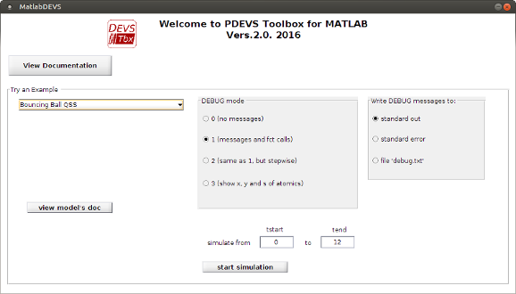
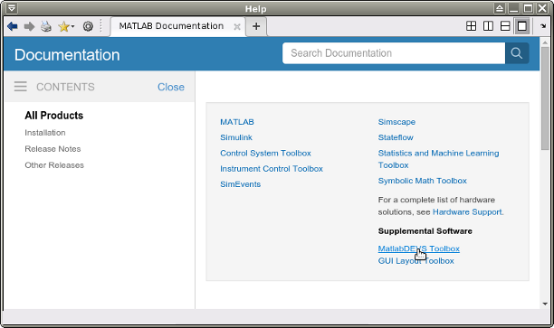
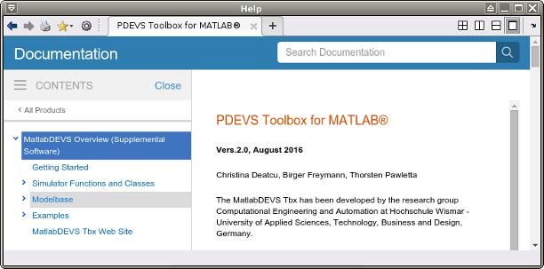
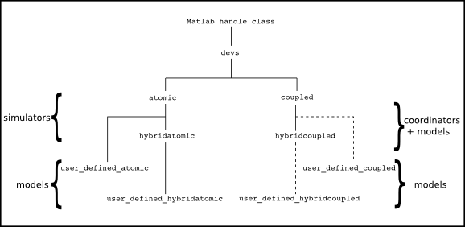

PDEVS Toolbox for MATLAB®
Vers.2.0, September 2016
Christina Deatcu, Birger Freymann, Thorsten Pawletta
The MatlabDEVS Tbx has been developed by the research group Computational Engineering and Automation at Hochschule Wismar - University of Applied Sciences, Technology, Business and Design, Germany.
Contact project supervisor Christina Deatcu (christina.deatcu@hs-wismar.de) for any questions, download authorization and bug reports.
Disclaimer of warranty: The developers assume no liability for accuracy and completeness of the provided information. This refers to damages of substantial or ideational form, that are caused by the usage of the MatlabDEVS Toolbox. By reason that the MatlabDEVS Toolbox is constantly evolving there is no warranty for operability.
Contents
About
This Toolbox is based on the Discrete EVent System Specification (DEVS) and its associated abstract simulator algorithms introduced by Zeigler in 1976. It implements a PDEVS simulator with ports and also offers an experimental status of hybrid simulation by allowing the definition of continuous variables within atomic models. Usage requires a general understanding of how DEVS algorithms and DEVS modeling works. The MatlabDEVS Tbx comes with some example models for pure discrete and hybrid scenarios and also QSS-based models. DEVS-based approaches are relatively unknown in the engineering community. So we hope to contribute in bringing DEVS to engineers by providing it for Matlab®.
You can download the toolbox here.
The MatlabDEVS Toolbox offers the following features:
- Lean GUI to run some examples,
- Simulator and coordinator classes,
- Root coordinators for simulation of pure discrete or hybrid models,
- Debug modes,
- Templates for user defined atomic and coupled models,
- Modelbase containing reusable atomic and coupled models,
- Examples, including QSS and hybrid models,
- Automatic recording of states in atomic models over time during simulation,
- Methods to check plausibility of models.
Installation
The install instructions are based upon a former successful Matlab R2016a (or higher) installation. The software is tested with 32/64 bit Windows 7 and Ubuntu 16.04 but should also work with other operating systems.
Unzip the downloaded file and copy it to your harddisk into a specified folder. Add the folder including any subfolders to the path variable within Matlab (Menue: File -> Set Path -> Add with subfolders).
Alternatively install as Matlab's App: goto Tab APPS --> install Apps --> choose MatlabDEVS.mlappinstall --> done ;-)
Quick Start
After installation run MatlabDEVS from Apps or type MatlabDEVS at Matlab prompt. The GUI will offer you access to this documentation and allows you to run some of the examples choosing different time intervals and debug modes.

Getting Help
You already found this HTML-documentation --> excellent! So you can browse it in your standard browser.
MatlabDEVS also integrates into Matlab's help browser. After having added Tbx's folder to the path, you can access the help files via the Supplemental Software tab in help browser and also search for keywords.


Class Hierarchy
The DEVS simulation environment and model definitions are programmed following the object oriented approach. For atomics, base classes act as associated simulators, derived classes are the models. The modeler has to implement models by deriving new classes from atomic and hybridatomic respectively. For the coupled, the classes coupled and hybridcoupled respectively act as coordinators and as models either. Alternatively, it is possible to derive user defined coupled models from class coupled and hybridcoupled, if you want to save them for reuse.

Simulator
Root Coordinators:
- root coordinator (pure discrete simulation) --> r_c_discrete
- root coordinator (hybrid simulation) --> r_c_hybrid
Associated Simulators and Coordinators:
- coordinator (discrete) AND model --> coupled
- coordinator (hybrid) AND model --> hybridcoupled
- simulator (discrete) --> atomic
- simulator (hybrid) --> hybridatomic
- base class --> devs
Use of debug modes and call of root coordinators is explained in initialization scripts of example models.
Modeling
Find a list of all models provided in Modelbase here.
All pure discrete atomic models are based on am_discrete_template.m, all hybrid atomic models are based on am_hybrid_template.m. Discrete coupled models are based on cm_discrete_template.m.
To create own atomic models use the templates, define x and y ports, states, sytem parameters, and fill characteristic functions with the desired behaviour.
Coupled models are defined by creating instances of class coupled and hybrid_coupled respectively and defining ports, components and couplings within initialization scripts. For definition of reusable coupled models, you can also derive user defined classes from coupled or hybridcoupled. In this case, the constructor of user defined coupled models needs to instantiate all submodels and define ports and couplings.
Explore the examples to learn how to define models within initialization scripts. Typically, an experiment consists of an initialization script, a call of the appropriate root coordinator to start a simulation run, and an analysis and/or plot function or script to get simulation results.
To verify that your model is consistent, you can use the Check method. Pass the outermost model to this method (call: Check(root_model)) and it will be checked recursively if:
- all subcomponents are existing,
- all portnames used in coupling matrices are existing,
- component(s) define self loops,
- all existing ports are connected (warning, if unconnected ports are detected).
Debug modes
The textual debug modes 1 and 2 provide information about simulation messages interchanged between associated simulators and coordinators, calls of the dynamic functions of atomic models and current input, output and state values. Moreover, these modes are well suited for learning PDEVS and for understanding the simulation algorithms. For both modes the following can be defined whether the textual output should be written as: (i) standard output device (the MATLAB prompt); (ii) standard error device or (iii) a text file.
Debug mode 2 generates exactly the same output as mode 1 but it operates stepwise. A step is, thereby, not defined as an equidistant amount of time but as the distance between two internal events.
The debug mode 3 (for atomics) provides an online visual representation of ports and states and their current values.
Each of the three debug modes can be set for the entire model, the root_model or for parts of it, by calling the set_debug(obj,mode,out) method and passing the object reference, the debug mode and an optional parameter out to define output, if the mode is set to 1 or 2, such as follows:
set_debug(root_model,1,1) for entire model, mode=1, out= stdout
set_debug(...coupled_model,2,2) for coupled and it’s submodels, mode=2, out= stderr
set_debug(...atomic_model,3) for single atomic, mode=3
Setting of debug mode needs to be done before simulation, usually in an initialization script.
Exampels
Get a list of examples here.
Discrete Examples
- single server
- assembly line
- testcase: two outputs to one input
- bouncing ball qss
- sinus qss
- step qss
Hybrid Examples
- bouncing ball
- orange juice canning
Examples Modelbase << Back